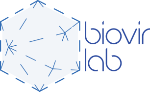

Bioinformatics · Virology · Omics

The laboratory
We work at the interface between computational biology and virology, using metagenomic and metatranscriptomic data to reconstruct viral genomes, infer phylogenetic relationships and describe the diversity of viruses associated with invertebrates, plants, vertebrates and natural environments.
Beyond basic research, the laboratory develops open computational workflows and tools for the scientific community, and maintains continuous training activities for undergraduate and graduate students.
Virus discovery
Identification and characterisation of novel viruses from large-scale sequencing data, with manual curation and experimental validation.
Genomics and evolution
Genome reconstruction, functional annotation and phylogenetic analyses to understand the origin and diversification of viral lineages.
Open tools
Development of reproducible pipelines and software for virome analysis, released in public repositories.
Scientific training
Supervision of undergraduate, MSc and PhD students, with an emphasis on critical thinking and open science.
Where we are
BioVirLab is based at the State University of Santa Cruz (UESC) and at the Federal University of Southern Bahia (UFSB), in the cities of Ilhéus and Itabuna — Bahia, Brazil.
 Map: Esri, OpenStreetMap
Map: Esri, OpenStreetMap
- 1Universidade Estadual de Santa Cruz (UESC)Soane Nazaré de Andrade Campus — Rodovia Jorge Amado, km 16, Salobrinho, Ilhéus – BA, 45662-900, BrazilGet directions
- 2Universidade Federal do Sul da Bahia (UFSB)Jorge Amado Campus — Rodovia Ilhéus–Vitória da Conquista (BR-415), km 39, Ferradas, on the Itabuna–Ilhéus border – BA, 45613-204, BrazilGet directions
For collaborations, questions or research opportunities, reach us through the laboratory’s Instagram.